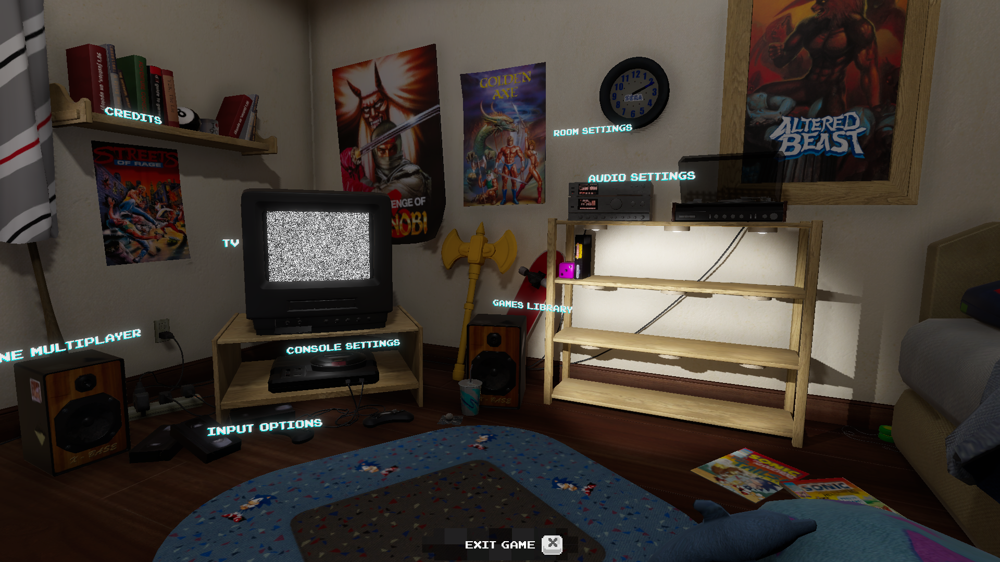

Project Classic
Production Sync-up Meeting
Our weekly production sync-up meetings are scheduled for every Saturday between 5:30 and 6:00 pm, with the lead producer spearheading the session and delivering crucial announcements.
Held via a Discord voice channel, these concise gatherings are dedicated to discussing updates on the progress of tasks assigned to each producer's squad in Jira. They provide a valuable
opportunity for team communication, especially for addressing any emerging issues or inquiries. Furthermore, we utilize this time to review the agendas for the forthcoming Studio-wide meeting.
This ensures that all team members are well-informed about the focus areas for the next day's discussions.
Leads Meeting
Lead meetings take place every Saturday from 6:00 to 7:00 pm, bringing together producers and directors from narrative, art, audio, programming, and quality assurance to share announcements and
updates about their respective departments and teams. During these meetings, we categorize art and audio assets for assignment on the asset sheet and prioritize tasks, marking them as low, medium,
or high priority, while also discussing new game features. Art squad members are scheduled to present for 10 minutes each, which precedes the division into departmental meetings. To integrate new
producers, we practice task breakdown and address implementation questions in squad meetings. Leadership and meeting effectiveness are enhanced through the directors and lead producers' oversight
of squad meetings. We've also introduced reforms to define the leadership role of producers more clearly and to streamline the assignment of new tasks and responsibilities within the production team,
recognizing the evolving nature of these roles in the project team.
Studio-wide Meeting
This meeting is crucial as it encompasses a wide array of vital subjects such as agendas, announcements, logistical details, department highlights, and reminders. It's an opportunity for designers to
present their work, showcasing the assets, sprites, scripts, animations, concept arts, and audio files that should be integrated into the Unity Game Engine for the development of our rogue-like, run-and-gun
adventure game. Following this, producers facilitate the Task Breakdown and Implementation Question (TBIQ) session to refine task lists by adding new tasks, assessing the progress of current tasks, transferring
unfinished tasks from previous sprints, and reducing task scopes to eliminate superfluous assets within tight deadlines. Each sprint concludes with a QA week, during which we test the game prototype, identify bugs,
propose feature additions, and the QA team meticulously documents feedback. Departmental meetings serve as a forum for technical discussions and problem-solving, with any extra time devoted to hands-on work sessions.
The overarching aim of project-level meetings is to tackle weekly challenges, strategize solutions, and set the task agenda for the next sprint. Moreover, during the weekly review of task assignments, the squad
leader recaps the team's achievements, outlines plans for the week ahead, and gathers feedback from department heads.
Task Breakdown Implementation Questions Documentation
As the producer during squad meetings, my role entails completing the Task Breakdown Implementation Questions (TBIQ) template. This template is comprehensive, encompassing sections for the design presentation
where links to slides or documents are provided, notes from the presentation are captured, and any questions asked by members along with the designer’s responses are recorded. It also requires detailing the asset
breakdown to identify the necessary programming, art, and audio assets for squad members to focus on, including their implementation specifics and any task dependencies, whether they relate to unfinished tasks from
other departments or squads. Once the TBIQ documentation is complete, it is my responsibility to refine these notes for clarity and accuracy before uploading them to Confluence. This ensures that anyone on the project
team can access and understand the discussions and decisions made during the squad meetings. The purpose of conducting the TBIQ is to foster active engagement between producers and squad members in discussions on
enhancing and refining the game prototype, thereby laying the groundwork for successful playtesting in the weeks to follow.

Logging and Updating Tasks on Jira
Prior to entering tasks into Jira, it is essential to thoroughly review the Task Breakdown Implementation Questions (TBIQ) documentation, lists of art and audio assets, and the feedback tracker. These documents
serve as crucial tools for producers and directors, aiding in the organization of each sprint by highlighting which tasks require immediate attention and identifying any that may have been overlooked. Ensuring a
balanced distribution of workload when assigning tasks is also a key step in this process. After a meticulous assessment, producers are tasked with crafting detailed titles and descriptions for each task before
adding them to the project backlog. This allows directors to subsequently review and allocate these tasks to the appropriate squad members within their departments. Utilizing Jira as a platform enables team members
to easily access their tasks, monitor their progress, and contribute effectively towards the development of the prototype, ensuring a smooth progression of the project.

Playing Gunstar Heroes
“Gunstar Heroes” is a dynamic side-scrolling shooter game where players have access to four distinct weapons. These weapons can be combined in pairs, resulting in 14 unique weapon options. Players also have the capability
to confront enemies up close, utilizing grabs, throws, slides, jumps, and long-range skid attacks for versatile combat. Uniquely, the game employs a numerical life system, diverging from the genre's typical one-hit deaths;
players can withstand multiple hits before facing the choice to restart the level or end their game, with the advantage of unlimited continues. A standout feature of “Gunstar Heroes” is its boss battles, showcasing large,
multi-sprite enemies that move fluidly, enhancing the challenge and excitement. Playtesting this game is crucial for gaining insights into the mechanics and objectives of successful run-and-gun games, which will inform the
development of an engaging and well-crafted game.

Production Work Session
Work sessions are held every Friday from 6:00 to 10:00 pm, providing an opportunity for team members from both the Classic and Quest studios to come together in a shared space for studio-related work. The executive producer
introduced me to Unity Hub, which is used to launch the game editor employed by our project team for integrating art, audio, and programming elements into the game. I've also become acquainted with GitHub Desktop and its
capabilities for managing different versions of the game prototype, allowing for seamless updates and launches within Unity. My understanding of how the Unity game engine works, including its integration with GitHub Desktop
and Bitbucket for managing code updates through pull and push requests, has deepened. Additionally, I explored the SourceTree tool, which offers insightful visual representations of project progress. These resources are crucial
for producers like myself to conduct weekly checks on our squad members, ensuring their tasks are completed accurately and efficiently.

Creating Production Timeline
The production timeline is designed to provide studio members with a clear outline of the semester's progression and the sequencing of feature implementations into the game prototype. This timeline is also presented to advisors
and industry mentors, offering them insight into the studio's operational plans and ensuring alignment with project goals. The strategic addition of features after each sprint is crucial, leading up to a QA and finalization phase
where the focus shifts to polishing and balancing the game. This meticulous preparation aims for a smooth game launch on platforms like Steam. Furthermore, the game will be featured at the MDev event in the Bob and Betty Beyster Building,
where teams from the University of Michigan and other institutions will have the opportunity to showcase and demo their gaming projects.
Mid-week Update Checkup
The midweek check-in is a crucial touchpoint for all squad members within the @Classic Enemies team, designed to facilitate transparency and accountability across our projects. Utilizing our dedicated channel, enemies-bosses-midweek-update,
this check-in encourages each team member to share updates on their progress, plans, and any challenges they're facing. Each member is asked to create a post titled with their name, department, and the current date, ensuring clarity and ease
of reference. The content of the post should detail what you've accomplished so far this week. This could include anything from a brief overview of your programming efforts, snapshots of art developments, to samples of audio work.
If you haven't made progress, this is an opportunity to outline what you intend to focus on next. It's also a time to voice any obstacles, queries, or concerns that might be hindering your progress. This part of the update is crucial for fostering
a supportive environment where team members can solicit advice or assistance by tagging relevant colleagues. This structured approach to midweek updates is not just about tracking progress; it's about fostering a collaborative and supportive workspace
where challenges are addressed promptly, and achievements are shared and celebrated.
Hours Breakdown
Start of Sprint 1
- Production Sync-up Meeting (30 minutes)
- Leads Meeting (1 hour)
- Studio-wide Meeting (3 hours)
- Studio Announcements – 11:00 AM ~ 11:10 AM (10 mins)
- Project Announcements – 11:10 AM ~ 11:20 AM (10 mins)
- Theme Pitches – 11:20 PM ~ 12:20 PM (60 mins)
- Squad Meeting – 12:20 AM ~ 1:20 PM (60 mins)
- Department Meeting – 1:20 PM ~ 2:00 PM (40 mins)
- Task Breakdown Implementation Questions Documentation (1 hour)
- Logging and Updating Tasks on Jira (1 hour)
- Playing Gunstar Heroes (30 minutes)
- Production Work Session (2 hours)
Mid-Sprint 1
- Production Sync-up Meeting (30 minutes)
- Leads Meeting (1 hour)
- Studio-wide Meeting (2 hours 30 minutes)
- Studio Announcements – 11:00 AM ~ 11:20 AM (20 mins)
- Project Announcements – 11:20 AM ~ 11:30 AM (10 mins)
- Squad Meeting – 11:30 AM ~ 12:30 PM (60 mins)
- Department Meeting – 12:30 PM ~ 1:30 PM (60 mins)
- Task Breakdown Implementation Questions Documentation (1 hour)
- Logging and Updating Tasks on Jira (1 hour)
- Creating Production Timeline: (2 hours)
- Midweek Update Checkup (30 minutes)
- Playing Gunstar Heroes (30 minutes)